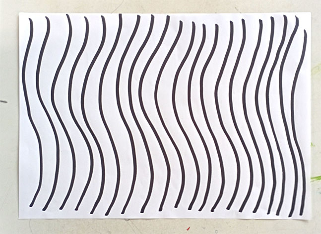
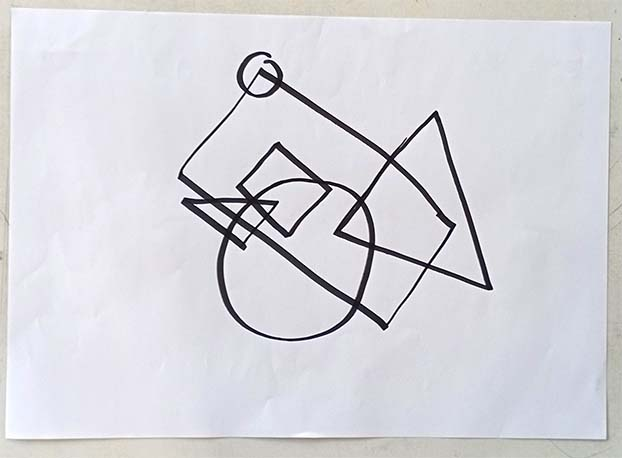
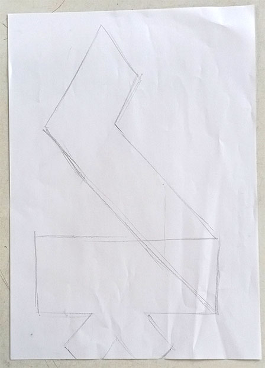
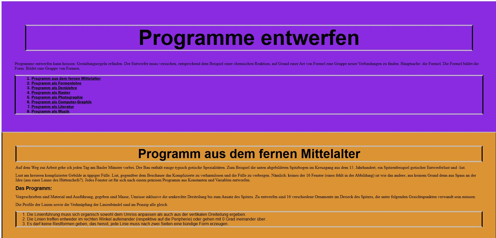
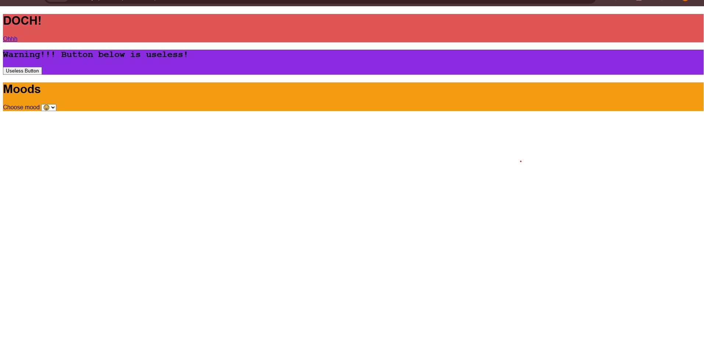

Über die Session
In der ersten Session „Drawing Algorithms“ begannen wir zunächst mit einer analogen Aufgabe, um ein grundlegendes Verständnis dafür zu entwickeln, wie Algorithmen funktionieren und wie wichtig eine präzise Angabe von Parametern ist.
Die erste Aufgabe bestand darin, anhand der Wall Drawings #46, #797 und #295 von Sol LeWitt zu verstehen, wie Prompts funktionieren. Ein Beispiel dafür ist Wall Drawing #46 mit der Anweisung: “Vertical lines, not straight, not touching, covering the wall evenly.”
In der zweiten Aufgabe arbeiteten wir in Zweiergruppen. Dabei sollten wir uns gegenseitig einen Prompt schreiben, der anschließend von der jeweils anderen Person ausgeführt wurde. Der Prompt wurde so lange angepasst und präzisiert, bis das Ergebnis möglichst genau mit der ursprünglichen Vorlage übereinstimmte.
Als erste digitale Aufgabe erstellten wir anschließend eine index.html und experimentierten mit verschiedenen HTML-Tags, um ein erstes Verständnis für den Aufbau von Webseiten zu bekommen. Nachdem wir die Grundlagen von HTML kennengelernt hatten, beschäftigten wir uns mit CSS. Anhand eines vorgefertigten HTML-Dokuments lernten wir die ersten Schritte, um mit CSS Styles anzuwenden und das Erscheinungsbild einer Webseite zu gestalten.
Reflexion
Ich hatte mich zwar zuvor bereits ein wenig mit dem Programmieren beschäftigt, allerdings hielt sich mein Verständnis davon noch in Grenzen. Gerade durch die analogen Aufgaben konnte ich die Prozesse, die beim Programmieren ablaufen, deutlich besser nachvollziehen und verstehen.